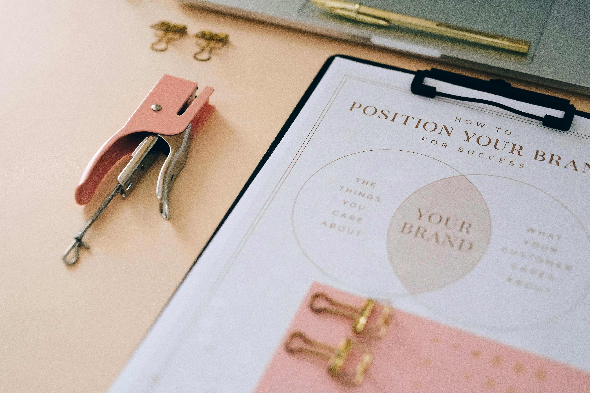

My Portfolio
Here are some of my recent projects showcasing marketing, video editing, and creative work.

Social Media Campaign
Planned and executed a complete social media marketing campaign that increased engagement and brand visibility across multiple platforms.
View ProjectPromotional Video Editing
Edited a high-quality promotional video for a brand, focusing on storytelling, smooth transitions, and audience engagement.
View ProjectProduct Photo Editing
Enhanced product images with professional retouching, color correction, and lighting adjustments to improve visual appeal.
View Project
Content Strategy & Branding
Developed a content strategy and visual branding that helped the client maintain a consistent and professional online presence.
View Project